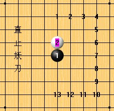
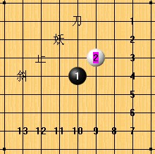

咳咳，在下不才，恭据妖刀天下斑竹一职，有热情为大家服好务。
欢迎诸位广发妖刀帖，非相关妖刀帖则请移步他处。
本站妖刀高手甚多，请不吝指导。
感谢在妖刀板块发贴跟贴的棋友，感谢共享刀谱的朋友。
没别的感谢，赠送金币和加威望哈。
论坛欢迎各位发题目，
1.题目不要过大，最好具体（我自己做的就不好）。
2.题目不要变态难，不然打击大家信心哈。
3.题目不要变态简单，不然影响论坛声誉哈。
4.上面说的不作数，大家随意。

1大寒星 2大溪月 3外溪月 4大疏星 5外残月
6大残月 7大金星 8大新月 9外新月 10大游星
11外山月 12大山月 13大瑞星

斜止13局名称依次为：
1大长星 2外峡月 3大峡月 4大恒星 5大水月
6外水月 7大流星 8外岚月 9大岚月 10大明星
11大名月 12外名月 13大彗星
据传闻：
直止： 大寒星无结论
大溪月无结论
外溪月无结论
外残月无结论
大残月无结论
其他为黑败局。
据传闻：
斜止： 外峡月无结论
大峡月无结论
大恒星无结论
大明星无结论
其他为黑败局。

晕，楼主 说的 都那么含蓄，有点 让人更晕。。。
到底有没有 确定的结论，别总是 据说 ，据说的。。。受不鸟。。。